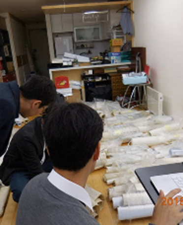
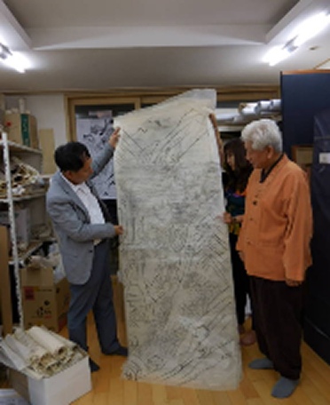

민화 화본 (畫本) 컬렉션
민화에는 특유의 자유분방함과 독창적 조형언어를 통해 당대 생활 풍속, 시대 문화상이 압축적으로 반영되어 있습니다.
그럼에도 민화는 기존의 문인화 위주의 미술사 연구로 인해 그 가치가 충분히 조명되지 못하고 있으며, 민화의 독자적 조형양식과 제작기법을 살필 수 있는 화본은 그 소장현황 조차 파악되지 못한 상태입니다.
아르코예술기록원은 이러한 민화 화본의 시각문화사적 연구 가치에 주목하여,
파인(芭人) 송규태 화백(1934~)이 기증해주신 민화 화본(畫本) 141건(863점의 화본) 컬렉션을 구축하였습니다.
송규태 화백은 전통 채색화 분야 최고의 수리복원 전문가이자 한국 민화계의 산 증인으로, 1970년대부터 개인소장은 물론 국내 주요 박물관·미술관 소장 민화 및 궁중회화의 보수·복원 작업에 종사하면서 모사해둔 화본이 수천 점에 이르지만 별도의 보존관리 조치가 이루어지지 못한 상태였습니다.
아르코예술기록원은 다음과 같은 절차를 통해 송규태 민화 화본 중 보존 가치가 높은 화본을 조사하고 보존 처리하여 컬렉션을 구축하였습니다.
- 2018 <송규태 소장 민화 화본 조사 및 활용에 관한 연구> (연구책임 : 경주대학교 문화재학과 정병모 교수)
- 2019 실물 화본별 보존처리 및 입수, 디지털화 (제재별 분류 - 취약자료의 배접 - 복사 - 디지털 매체변환)
- 2020 화본별 제작 실무 정보의 구축 (내용 작성 : 송창수 동덕여대 민화학과 교수, 감수 : 송규태 화백)
구축 절차
-
Step 1
화본분류

-
Step 2
연구조사

-
Step 3
전문가 자문
-
Step 4
배접, 복사, 디지털화
-
Step 5
시스템 구축
송규태 민화 화본 컬렉션의 특징은 다음과 같습니다.
- 대량유통을 목적으로 하는 민화의 특성을 반영하여 화본 이미지 구축에 초점을 두었다는 점
- 각각의 화본은 송규태 화백이 주요 박물관에 소장된 원화를 실견하여 직접 본을 뜬 화본이라는 점
- 화본 제작 실무내용에 초점을 맞추어 민화 모사과정에 대한 상세정보를 구축하였다는 점
- 출처 불명이 돼 버린 궁중장식화나 민화가 상당수 포함되어 실물 원화의 흔적을 살필 수 있는 근거자료 중 하나라는 점
- 화본의 유통 및 거래정보에 대한 내용을 통해 전통의 계승과 변용과정, 당대 컬렉터들의 수요와 취향의 흐름을 확인할 수 있다는 점
- 송규태 화백이 직접 제작한 채색 모사본이 있을 경우, 함께 실어 근대 채색화법의 일면을 살필 수 있다는 점
민화의 창작지원 및 화본 연구가치의 확산을 위해 업로드 된 고화질 화본이미지는 기증자의 뜻에 따라 무료로 다운로드 받으실 수 있습니다.